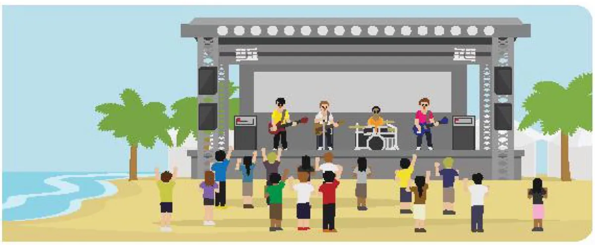

Enjoying music
Lesson 5 — Listening
3Five stops in 45 minutes
- 🎪
Warm-up
What kind of event?
5 min - 🔤
Before
Six festival words
7 min - 🎧
While
Tasks 2 and 3
16 min - 🪧
Poster
Fill in the gaps
5 min - 💬
After
Go to a festival?
10 min
By the end of this lesson…
- 🎧
Listen for gist
Tick the topics you hear in an interview.
- 🔎
Listen for details
Decide if statements are true or false and correct them.
- 💬
Discuss
Say if you want to go to a music festival and why.
What kind of event is it?
Task 1 · look and answer
5 minutes1. What kind of event is it? 2. Where does it usually take place?

Answer in pairs, then share. 1. a music festival / an outdoor concert · 2. outdoors: on a beach, in a park, at a stadium, on a farm
Before you listen
Six festival words
7 minutesBefore you listen · 1–2
- background (n) /ˈbækɡraʊnd/ phông nền, phía sau
- set up (phr v) /set ʌp/ dựng, lắp đặt
Before you listen · 3–4
- stage (n) /steɪdʒ/ sân khấu
- free of charge (phr) /friː əv tʃɑːdʒ/ miễn phí
Before you listen · 5–6
- overcrowding (n) /ˌəʊvəˈkraʊdɪŋ/ sự quá đông người
- in advance (idiom) /ɪn ədˈvɑːns/ trước, đặt trước
While you listen
An interview about a music festival
16 minutesWhich information do you hear?
First guess: which topics will the interview talk about?
A. Location ✓ — on the beach last year · a big country park this year
B. Guests ✗ not mentioned
C. Decoration ✗ not mentioned
D. Tickets ✓ — they sold the tickets in advance
Correct the false statements · 1–2
- This is the first International Youth Music Festival. FALSE It is the second festival.
- The organisers have finished preparations for the festival. FALSE They are still setting up the main stage.
Correct the false ones · 3–5
- Last year, the festival was held on the beach. TRUE
- They are selling tickets for the festival at the park gates. FALSE Sold in advance.
- The country park is far from the town centre. TRUE
Festival poster
Team game · mini boards
5 minutesWrite the missing word on your mini board · 1–4
1. Entry to the concert is ______ – you don’t pay anything! free of charge
2. Buy your tickets ______: they sell out quickly! in advance
3. We sell only 5,000 tickets to avoid ______. overcrowding
4. ______: Green Valley Park, near the river. Location
Write the missing word on your mini board · 5–8
5. The ______ planned everything perfectly. organisers
6. Workers will ______ the stage at 5 p.m. set up
7. The band will perform on the main ______. stage
8. Read each singer’s ______ on our website. background
After you listen
Task 4 · group discussion
10 minutesDo you want to go to a music festival? Why or why not?
I want to go because…
I can see my idols perform live · the atmosphere is exciting · I can make new friends
I don’t want to go because…
it is crowded and noisy · tickets are expensive · it is far from my home
Roles: Speaker · Timekeeper · Reporter — the reporter shares your group’s answers.
What have you learnt today?
Today’s board
Words: background · set up · stage · free of charge · overcrowding · in advance
Listening: an interview about preparations for a music festival
Exit ticket: one new word · one detail from the interview · your opinion about music festivals.
Homework: workbook Unit 3 Listening; prepare Lesson 6 — Writing (page 33).